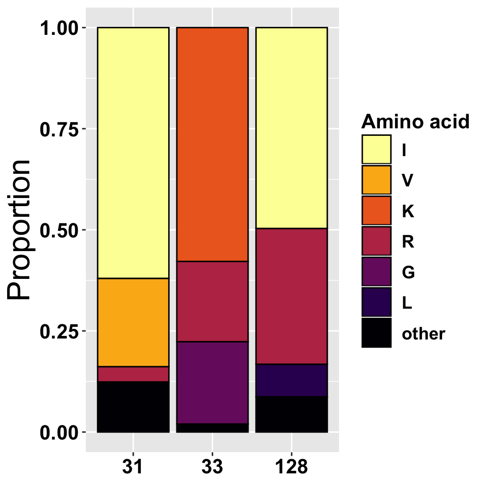
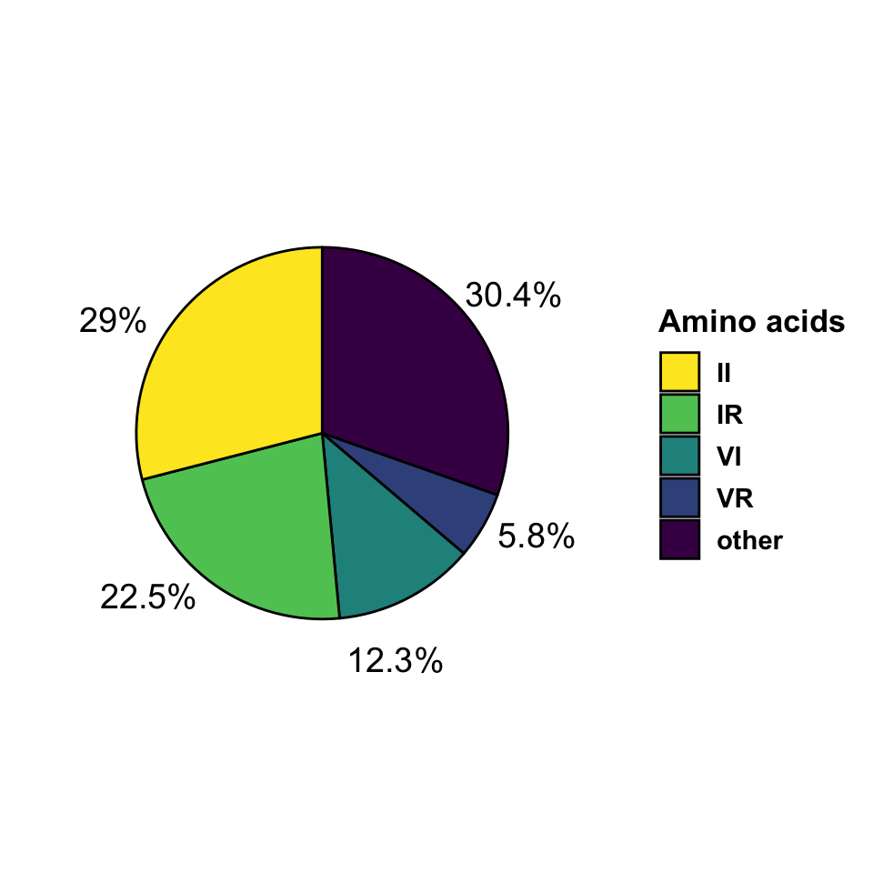
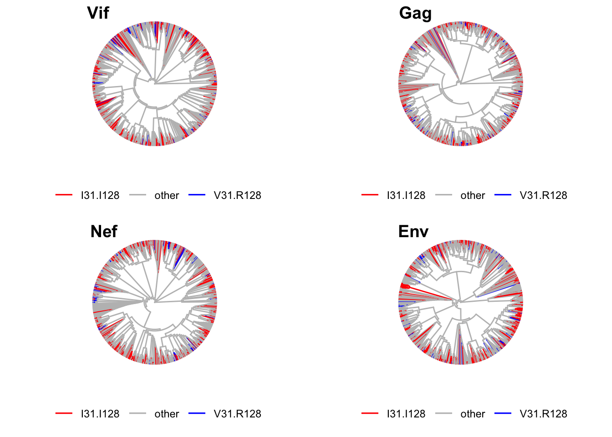

In this section we outline the analyses done to investigate:
WE FOCUS ONLY ON CLUSTER B SEQUENCES
The Los Alamos database was queried to obtain the alignments for the VIF sequences using the following parameters:
https://www.hiv.lanl.gov/cgi-bin/NEWALIGN/align.cgi
Alignment type: Web alignment (all complete sequences)
Year: 2018
Organism: HIV-1/SIVcpz
DNA/Protein: PRO
Region: vif
Subtype: NO Recombinants (A-K)
Format: FASTA
Alignment ID : 118AP15
Number of sequences: 3412We use the alignments to pull the resodues in positions 31, 33 and 128. We then calculate the frequencies at which the residues occur at a given position in all VIF sequences. Only the three most abundant residues in each position individually listed, the rest are collapsed in the category “other”. The frequencies are represented in the table and bar plot below.
| pos | res | freq | perc |
|---|---|---|---|
| 31 | I | 1346 | 0.620 |
| 31 | V | 474 | 0.218 |
| 31 | R | 82 | 0.038 |
| 31 | other | 269 | 0.124 |
| 33 | K | 1255 | 0.578 |
| 33 | G | 442 | 0.204 |
| 33 | R | 431 | 0.199 |
| 33 | other | 43 | 0.020 |
| 128 | I | 1078 | 0.497 |
| 128 | R | 729 | 0.336 |
| 128 | L | 175 | 0.081 |
| 128 | other | 189 | 0.087 |

We use the alignments to find which the residues where found at positions 31 and 128 for VIF sequence in each isolate. We then calculate the frequencies at which pairs of residues occur. Note that only selected pairs of amino acids are shown and the rest are collapsed in the category “other”. The frequencies are represented in the table and pie charts below.
| res | freq | prec |
|---|---|---|
| II | 630 | 0.290 |
| IR | 488 | 0.225 |
| other | 660 | 0.304 |
| VI | 267 | 0.123 |
| VR | 126 | 0.058 |

We now look at the pylogenetic distribution of residue combinations. In order to assess whether there is anything special about the way VIF proteins relate to each other we will compare them with other proteins, namely NEF, GAG and ENV. Alignments for NEF, GAG and ENV are retrieve from Los Alamos HIV database as decribed in Data aquisition. The details of the alignments are found below.
Alignment type: Web alignment (all complete sequences)
Year: 2018
Organism: HIV-1/SIVcpz
DNA/Protein: PRO
Region: nef
Subtype: NO Recombinants (A-K)
Format: FASTA
Alignment ID : 118AP7
Number of sequences: 5340
Alignment type: Web alignment (all complete sequences)
Year: 2018
Organism: HIV-1/SIVcpz
DNA/Protein: PRO
Region: env
Subtype: NO Recombinants (A-K)
Format: FASTA
Alignment ID : 118AP2
Number of sequences: 4760
Alignment type: Web alignment (all complete sequences)
Year: 2018
Organism: HIV-1/SIVcpz
DNA/Protein: PRO
Region: gag
Subtype: NO Recombinants (A-K)
Format: FASTA
Alignment ID : 118AP4
Number of sequences: 6381To provide an accurate comparison across sequenes, we only take into consideration isolates that have a representative in each protein file. In consequence, all the trees have the same number of sequences.
Trees’ were calculated using the ‘Phylogenetic tree’ functionality from the web server Clustal Omega (https://www.ebi.ac.uk/Tools/msa/clustalo/). Briefly, each file containing sequences for either VIF, ENV, GAG or NEF were uploaded in the server, processed for multiple sequence alignment, the phylogenetic trees were drawn and the phylgenetic tree infromation downloaded as Newick files. There were use as input in ‘ggtree’ for tree display highlighting the position of the isoalted with selected residue combinations.
A total of 795 entries are shared across alignments of Env Gag, Nef and Vif.

## R version 3.6.1 (2019-07-05)
## Platform: x86_64-apple-darwin15.6.0 (64-bit)
## Running under: macOS Mojave 10.14.6
##
## Matrix products: default
## BLAS: /Library/Frameworks/R.framework/Versions/3.6/Resources/lib/libRblas.0.dylib
## LAPACK: /Library/Frameworks/R.framework/Versions/3.6/Resources/lib/libRlapack.dylib
##
## locale:
## [1] en_GB.UTF-8/en_GB.UTF-8/en_GB.UTF-8/C/en_GB.UTF-8/en_GB.UTF-8
##
## attached base packages:
## [1] grid stats graphics grDevices utils datasets methods
## [8] base
##
## other attached packages:
## [1] kableExtra_1.1.0 gridExtra_2.3 viridis_0.5.1
## [4] viridisLite_0.3.0 knitr_1.25 dplyr_0.8.3
## [7] ggplot2_3.2.1 WriteXLS_5.0.0 seqinr_3.6-1
## [10] cowplot_1.0.0 ggtree_1.16.6 treeio_1.8.2
##
## loaded via a namespace (and not attached):
## [1] tidyselect_0.2.5 xfun_0.10 purrr_0.3.2
## [4] lattice_0.20-38 colorspace_1.4-1 vctrs_0.2.0
## [7] htmltools_0.4.0 yaml_2.2.0 rlang_0.4.0
## [10] pillar_1.4.2 glue_1.3.1 withr_2.1.2
## [13] rvcheck_0.1.5 lifecycle_0.1.0 stringr_1.4.0
## [16] munsell_0.5.0 gtable_0.3.0 rvest_0.3.4
## [19] evaluate_0.14 labeling_0.3 parallel_3.6.1
## [22] highr_0.8 Rcpp_1.0.2 readr_1.3.1
## [25] scales_1.0.0 backports_1.1.5 BiocManager_1.30.7
## [28] webshot_0.5.1 jsonlite_1.6 hms_0.5.1
## [31] digest_0.6.21 stringi_1.4.3 ade4_1.7-13
## [34] tools_3.6.1 magrittr_1.5 lazyeval_0.2.2
## [37] tibble_2.1.3 crayon_1.3.4 ape_5.3
## [40] tidyr_1.0.0 pkgconfig_2.0.3 zeallot_0.1.0
## [43] MASS_7.3-51.4 tidytree_0.2.8 xml2_1.2.2
## [46] httr_1.4.1 assertthat_0.2.1 rmarkdown_1.16
## [49] rstudioapi_0.10 R6_2.4.0 nlme_3.1-141
## [52] compiler_3.6.1